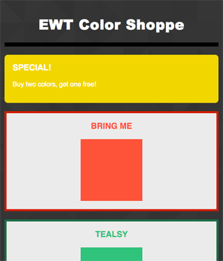
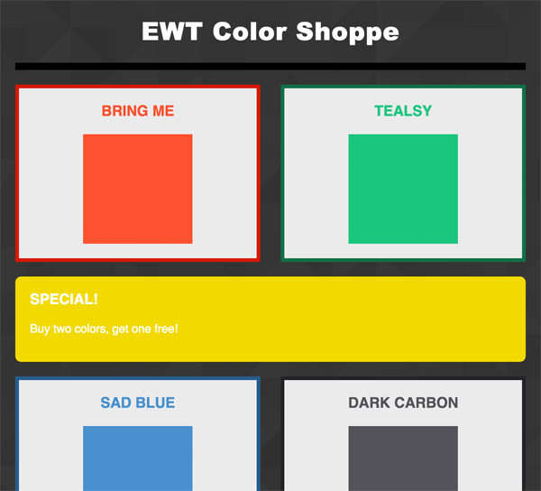

The end of float and table layouts
Flexbox is a new way to build layouts that doesn't involve hacky methods such as floating blocks to the left or using table rows and column. It's a whole new concept separate from those, and a much more flexible way to solve the needs of a layout.
We stil need the use of floats to aligning images, for example. So floats are not completely dead - they were just never meant to be used to build comoplex layouts.
For reference keep A Complete Guide to Flexbox open in a separate tab.
Key concepts
- Flex containers and flex items
- Main/Cross axes (flex container)
- Wrapping (flex container)
- Aligning items (flex container)
- Flex items flexing (flex item)
- Ordering (flex item)
- Aligning (flex item)
Flex containers and flex items
By default all divs are display: block;. To make any element a flexbox simply assign the value of the display property as "flex".
.content {
display: flex; /* NEW, Spec - Firefox, Chrome, Opera */
display: -webkit-box; /* OLD - iOS 6-, Safari 3.1-6, BB7 */
display: -ms-flexbox; /* TWEENER - IE 10 */
display: -webkit-flex; /* NEW - Safari 6.1+. iOS 7.1+, BB10 */
/* According to http://shouldiprefix.com/#flexbox */
}
By setting an element to be display flex, all of its elements inside will automatically become flex items
Main/Cross axes (flex container)
A Flexbox layout always has a main axis and a cross axis. The main axis
is defined by the flex-direction property set on the
flex container.
/* main axis is X, cross axis is Y */
.content {
display: flex;
flex-direction: row; /* default is row - no need to specify */
}
/* main axis is Y, cross axis is X */
.content-alt {
display: flex;
flex-direction: column;
}
Wrapping (flex container)
By default, flex items will not wrap inside a flex container. They will
instead just line up along the main axis. If you do want your
flex items to wrap, you need to set the flex-wrap CSS
property to wrap.
/* flex items should wrap for skinny screens */
.container {
display: flex;
flex-wrap: wrap;
}
@media (min-width: 1000px) {
/* flex items should not wrap for wide screens */
.container {
flex-wrap: nowrap;
}
}
Aligning items (flex container)
To align items along the main axis, specify the
justify-content property on the flex container.
To align items along the cross axis, specify the
align-content property on the flex container.
See the article on CSS-Tricks for the possible values and visuals.
Flex items flexing (flex item)
You can also control the flexing behavior of each flex item with 3 related CSS properties, each applied to flex items (not the flex container):
-
flex-grow- When there is extra space, the ratio by which the item should grow. The default is0. -
flex-shrink- When there is not enough space, the ratio by which the item should shrink. The default is0. -
flex-basis- The size of the flex item without any grow or shrink. This is the width whenflex-directionisrow(the default), or height when it'scolumn. The default isauto.
The above are usually expressed in shorthand:
flex: [flex-grow] [flex-shrink] [flex-basis];. If your
flex-grow and flex-shrink values are the same,
and flex-basis is the default (auto), you can
make it even shorter: flex: [flex-grow];.
One important thing to note is that flex-basis acts as the
minimum width (or height) for the item when wrapping is applied.
flex-wrap: wrap; on the flex container and
flex-basis are like peanut butter and jelly.
If you want a flex item to take up the entire row, simply set its
flex-basis to 100%.
Ordering (flex item)
You can change the display order (without messing with the HTML!) for
individual flex items by specifying the order property.
By default, all flex items have an order of 0. Flex items
are displayed from least to greatest order, so to put an
element at the start, you can change its order to
-1.
/* display me first! */
.thing {
order: -1;
}
Aligning (flex item)
Like the align-items property on the flex container, you can
specify alignment of individual flex items along the cross
axis by using the align-self property. This will
override the cross axis alignment set on the flex container.
Classwork
With a partner, complete the Flexbox exercises provided in zip on Moodle.
HW
Complete the Flexbox assignment posted to Moodle:
-
For mobile screens, use Flexbox to display the
.specialelement above all of the.colorelements.
 -
For screens 760px and wider, use Flexbox to:
-
Display the first two and last two
.colorelements on the same row. Each.colorelement should have aflex-basisof 48%. The horizontal free space should be placed in-between the two side by side.colorelements. -
Display the
.specialelement in-between the two rows.colorelements. The.specialelement should be the full width of the.container.
 -
Display the first two and last two
Next Week!
- Midterm work session